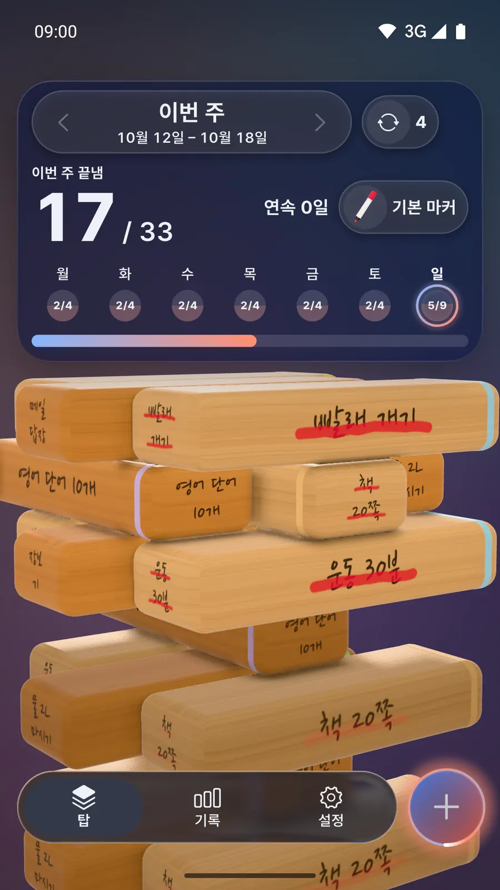
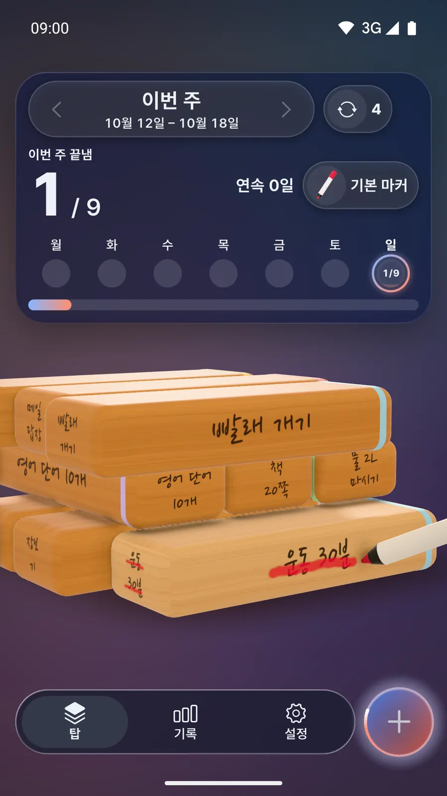
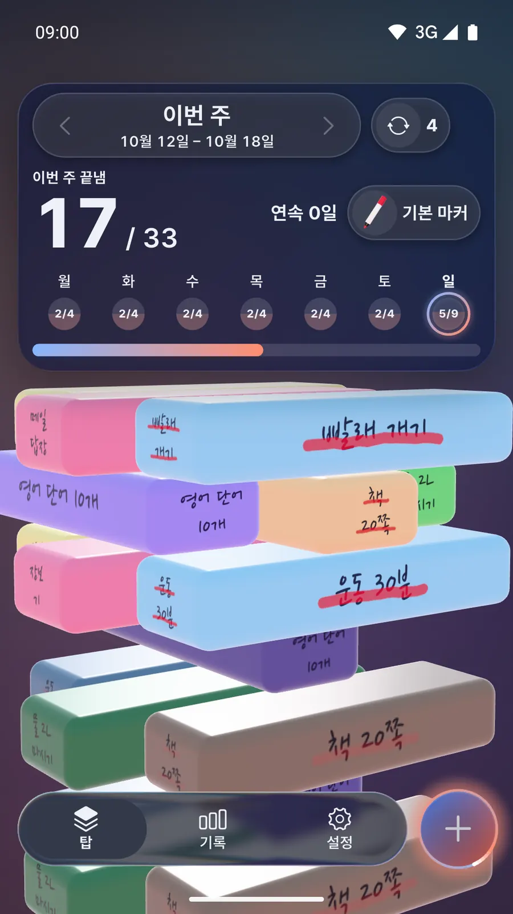
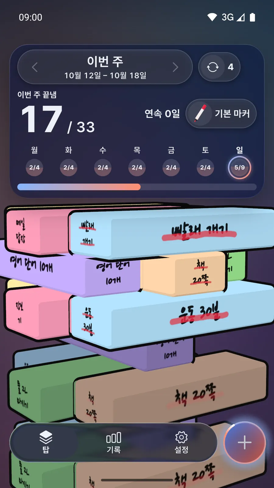
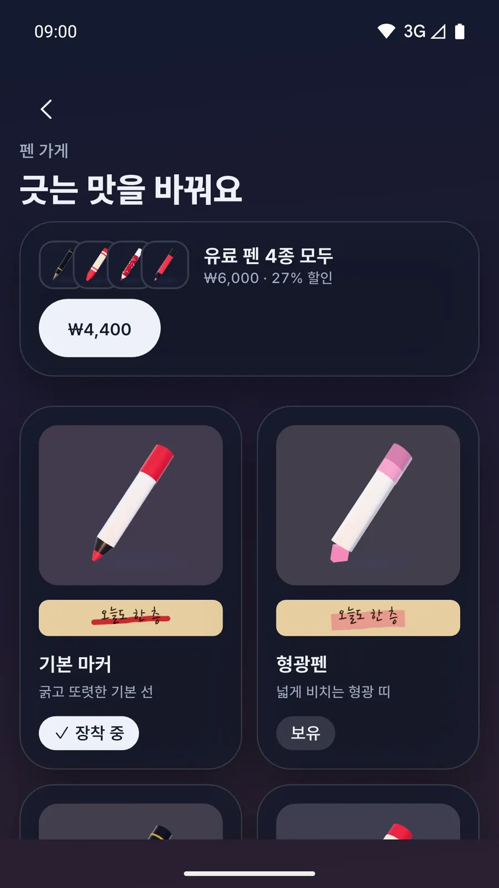

할 일을 날마다 한 층씩
오늘 할 일을 블록으로 쌓아요. 끝내면 줄을 긋고, 그 하루하루가 쌓여 탑이 돼요.
Android용이에요. 광고는 없어요.

30초면 충분해요
출근길에, 점심 먹고, 퇴근 전에. 잠깐 열어서 올리고 그으면 끝이에요.
-
할 일을 올려요
열두 글자 안쪽으로 한 줄. 오늘 묶음 맨 위에 블록으로 얹혀요.
-
끝내면 그어요
블록을 누르면 네 면에 줄이 그어지고, 블록이 제자리로 쑥 들어가요.
-
하루가 넘어가면 탑이 돼요
오늘 묶음은 그대로 굳고, 내일 묶음이 그 위에 쌓여요.
끝내면, 긋는다
완료 버튼이 아니에요. 펜이 날아와 블록 네 면에 줄을 그어요. 하루에도 몇 번씩 여는 앱이라, 그 한 번이 손맛이어야 했어요.

하루가 쌓이면탑이 돼요
오늘 할 일이 맨 위에 쌓여요
앱을 열면 오늘 묶음이 먼저 보여요. 남은 일은 삐져나와 있어서, 뭐가 남았는지 한눈에 들어와요.
아래로 내리면 어제예요
탑은 날짜 단위로 딱딱 걸려요. 지난 날은 고칠 수 없어요. 그날의 기록이니까요.
한 주를 다 끝내면 깃발이 꽂혀요
그 주의 블록을 전부 그으면 탑 꼭대기에 깃발이 올라가요. 몇 주째 이어 가는지도 세어 줘요.
미룬 일은 늙어요
못 끝낸 일은 그날 자리에 남고, 오늘 묶음에 다시 올라와요. 며칠째 미루면 먼지와 이끼가 앉아요. 그으면 털려요.
탑의 모양은 세 가지예요
같은 할 일도 룩에 따라 다르게 보여요. 설정에서 바꿔요.


펜마다 긋는 맛이 달라요
색만 다른 펜은 없어요. 펜이 바뀌면 선의 느낌이 바뀌어요.

여섯 자루 중 두 자루는 처음부터 쓸 수 있어요. 나머지 네 자루는 한 자루에 ₩1,500, 네 자루 묶음은 ₩4,400이에요. 한 번 사면 계속 써요.
쌓다 보면 쓰게 되는 것들
내일을 미리 쌓아요
저녁이 되면 오늘 위로 내일 할 일이 반투명하게 떠 있어요. 하루가 넘어가면 내려앉아요.
홈 화면에서 바로 그어요
오늘 목록 위젯과 미니 탑 위젯. 위젯의 ○를 누르면 앱을 열지 않고 그 자리에서 끝나요.
앱을 열지 않고 올려요
다른 앱의 공유, 빠른 설정 타일, 아이콘 길게 누르기. 보던 화면 위에 작은 카드 하나만 떠요.
아침·저녁에 묶어서 알려 줘요
아침엔 오늘 탑이 몇 층인지, 저녁엔 몇 개 남았는지 하루 두 번 묶어 알려요. 알림의 ✓ 버튼을 누르면 앱을 열지 않고 끝나요. 기본은 꺼져 있어요.
달력으로 그날에 바로 가요
탑을 한참 내리지 않아도 돼요. 날짜를 고르면 그 묶음으로 넘어가고, 며칠째 이어 가는지도 보여요.
이어 가면 메달이 쌓여요
긋기 100번, 30일 연속 같은 이정표를 지나거나 루틴을 이어 가면 동·은·금 메달을 줘요. 기록 탭 맨 위 진열장에 모여요.
광고와 가입, 가격
광고가 없어요.
가입도 없어요.
쌓기와 긋기는 무료예요.
계정을 만들지 않고, 개인정보를 수집하지 않아요. 할 일은 폰에 저장돼요. 인터넷이 없어도 쌓고 그을 수 있어요. 돈을 받는 건 펜 네 자루뿐이에요.
시작하기 전에 궁금한 것들
정말 무료인가요?
할 일 올리기, 긋기, 지난 날 보기는 모두 무료이고 광고도 없어요. 유료는 펜 네 자루뿐이에요. 한 자루에 ₩1,500, 네 자루 묶음은 ₩4,400이에요.
가입해야 하나요?
아니요. 계정이 없어요. 받아서 바로 써요.
못 끝낸 일은 어떻게 되나요?
그날 자리에 끝내지 못한 채로 남아요. 그리고 같은 일이 오늘 묶음에 새 블록으로 다시 올라와요.
날짜가 정해진 일은요?
쌓을 때 날짜와 "중요"를 정할 수 있어요. 중요한 일은 금빛 띠로 표시되고, 하루 전 저녁과 당일 아침 무렵에 알려 줘요.
지난 날을 고칠 수 있나요?
고칠 수 없어요. 지난 날은 그날의 기록으로 그대로 남아요. 고치기와 버리기는 오늘 묶음에서만 돼요.
하루는 몇 시에 넘어가나요?
기본은 새벽 4시예요. 설정에서 바꿀 수 있어요.
인터넷이 없어도 되나요?
네. 펜을 사거나 구매를 복원할 때만 인터넷이 필요해요.
백업할 수 있나요?
네. 설정의 데이터에서 파일 하나로 백업을 만들고, 그 파일로 통째로 되살려요. Android 자동 백업도 켜져 있어요.
글자를 키우거나 TalkBack을 써도 되나요?
네. 글자를 두 배로 키워도, TalkBack으로 들어도 똑같이 쓸 수 있어요. 3D가 버거운 폰에서는 같은 내용을 목록으로 보여 줘요.
iPhone에서도 쓸 수 있나요?
지금은 Android만 돼요.